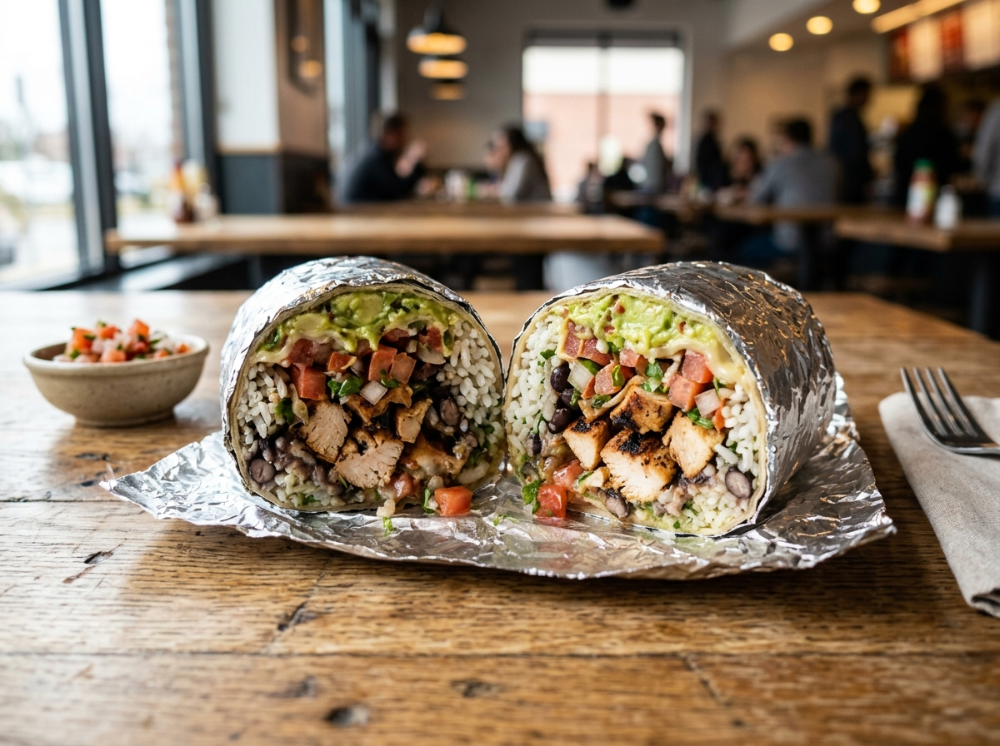
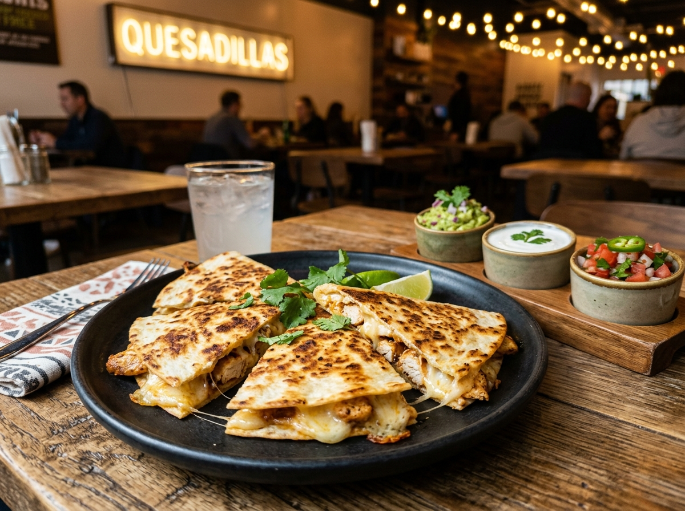
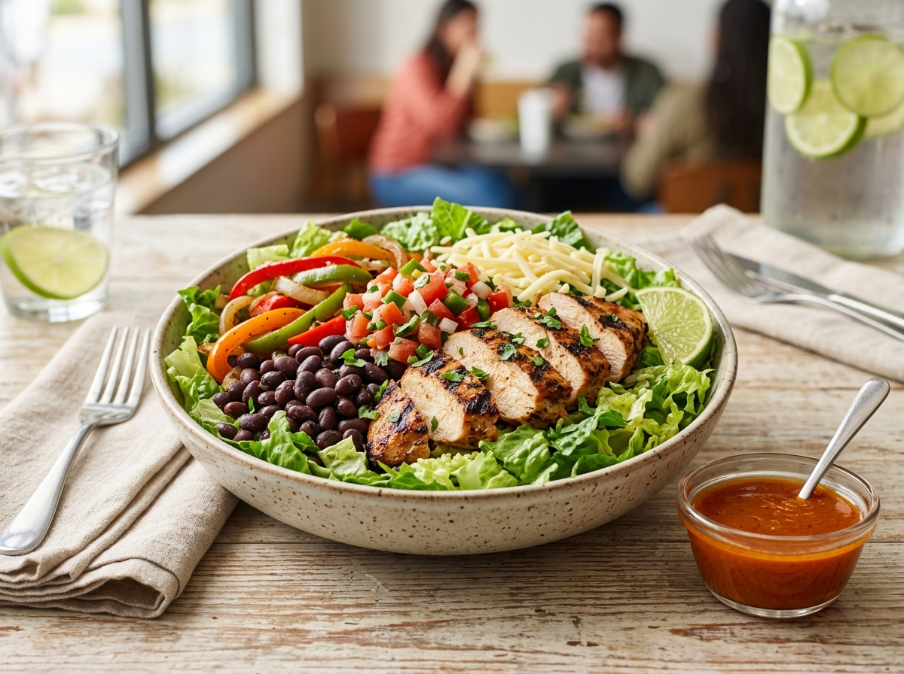
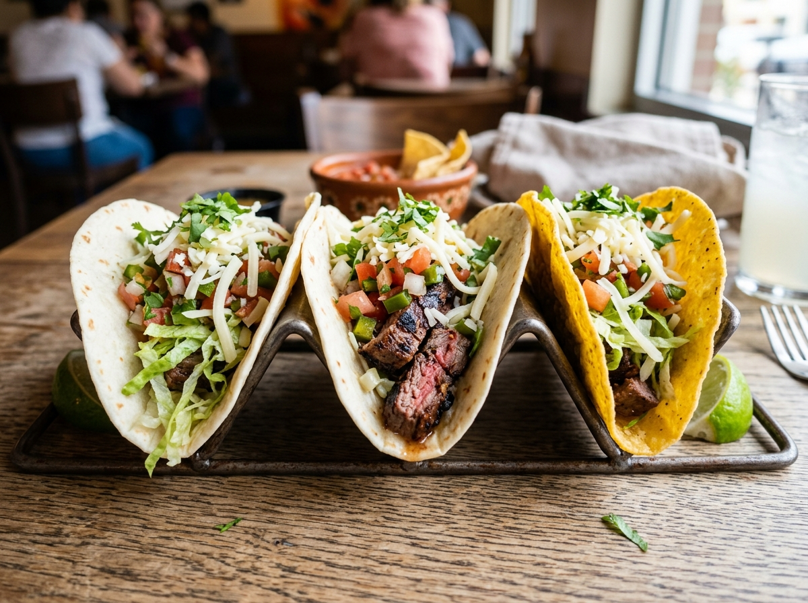
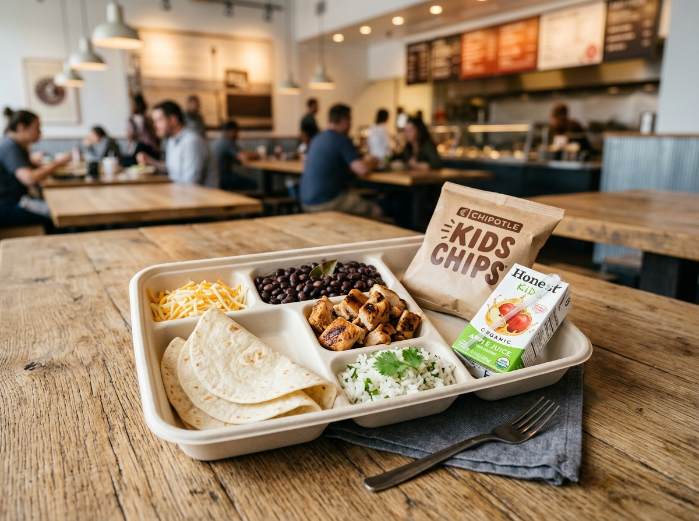
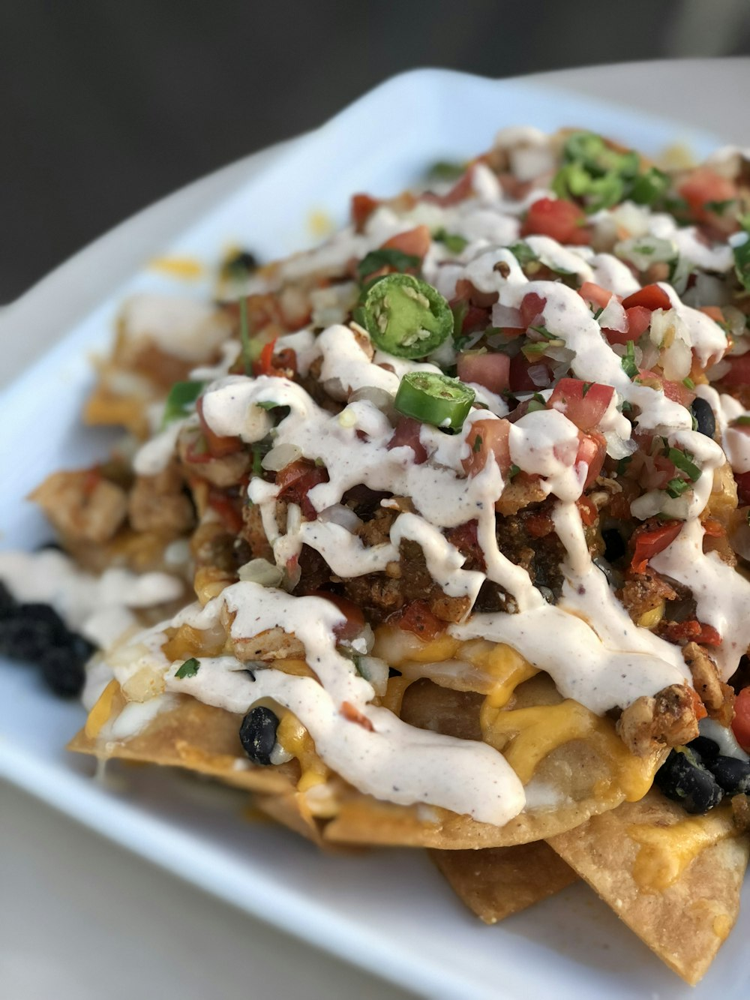

Chipotle Nutrition Calculator
Build your meal the way you actually order it and instantly see the numbers that matter: calories, protein, carbs, fat, fiber, sugar, and sodium — ingredient by ingredient.
- ⚡ Instant Live Totals
- 🥑 Standard Serving Sizes
- 🌯 7 Complete Menu Categories
Explore the Menu
Pick any Chipotle menu item below to start customizing ingredients and calculating estimated nutrition.
-

Burrito
Foil-wrapped flour tortilla filled with your choice of protein, rice, beans, salsas, and toppings.
-

Burrito Bowl
The fan favorite. Build your bowl with fresh rice, beans, grilled meat, salsas, queso, and guac.
-

Quesadilla
Warm pressed flour tortilla filled with Monterey Jack cheese, protein, fajitas, and 3 dipping sides.
-

Salad
Crisp romaine lettuce base with lean meats, beans, fajita veggies, and Chipotle-Honey Vinaigrette.
-

Tacos
Custom tacos in soft flour or crispy corn tortillas with protein, rice, beans, salsas, and cheese.
-

Kid's Meal
Build Your Own kid-sized meal with small tortillas, protein, rice, beans, cheese, and sides.
-

Chips & Sides
Crispy tortilla chips, fresh hand-mashed guacamole, creamy Queso Blanco, and signature salsas.
How It Works
Three simple steps — no sign-up, no app downloads, no math required.
-
Choose a Menu Item
Start with a burrito, bowl, quesadilla, salad, tacos, kid's meal, or chips and sides.
-
Customize Ingredients
Add your rice, beans, protein, salsas, cheese, guac, and extras exactly as you order them.
-
Get Live Totals
Instantly see calories, protein, carbs, fat, fiber, sugar, sodium, and macro distribution ratios.
Frequently Asked Questions
Everything you need to know about our Chipotle nutrition estimates and calculations.
No. This is an independent nutrition tool. We are not affiliated with, endorsed by, or sponsored by Chipotle Mexican Grill, Inc.
Values are estimates based on publicly available nutrition information and standard serving sizes. Real portions are scooped by hand in restaurants, so actual values can vary.
Calories, protein, carbohydrates, total fat, dietary fiber, total sugar, and sodium for the whole meal as well as itemized per ingredient.
No. The calculator is 100% free and runs entirely in your web browser — no registration, passwords, or personal data required.
Yes. Each ingredient card displays its individual calories and macro tags, and the detailed breakdown table lists each selected item line-by-line.
Yes. Plant-based proteins (Sofritas), black and pinto beans, brown and white rice, fajita veggies, guacamole, and fresh salsas are all included.
Not yet. For allergy-critical dietary decisions, please always check with restaurant staff or official Chipotle allergen documentation.
We update the dataset when we make changes based on available nutrition information.
Disclaimer
Chipotle Nutrition Calculator is an independent, community-driven tool and is not affiliated with, endorsed by, or sponsored by Chipotle Mexican Grill, Inc. All trademarks and brand names belong to their respective owners. Nutrition values are estimates for general health and informational purposes only and do not constitute medical or dietary advice.
Have Questions or Suggestions?
Spotted an incorrect value or want a new menu item added? We would love to hear your feedback.
Send Us a Message